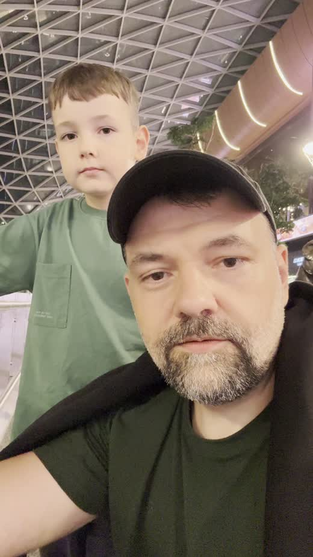
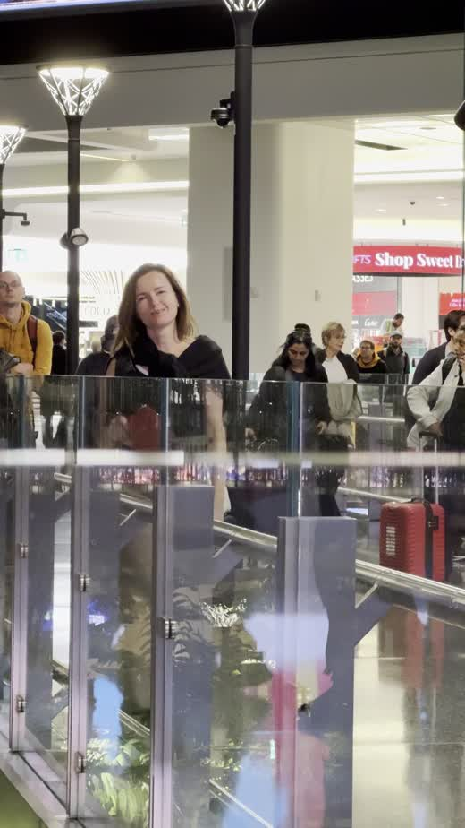
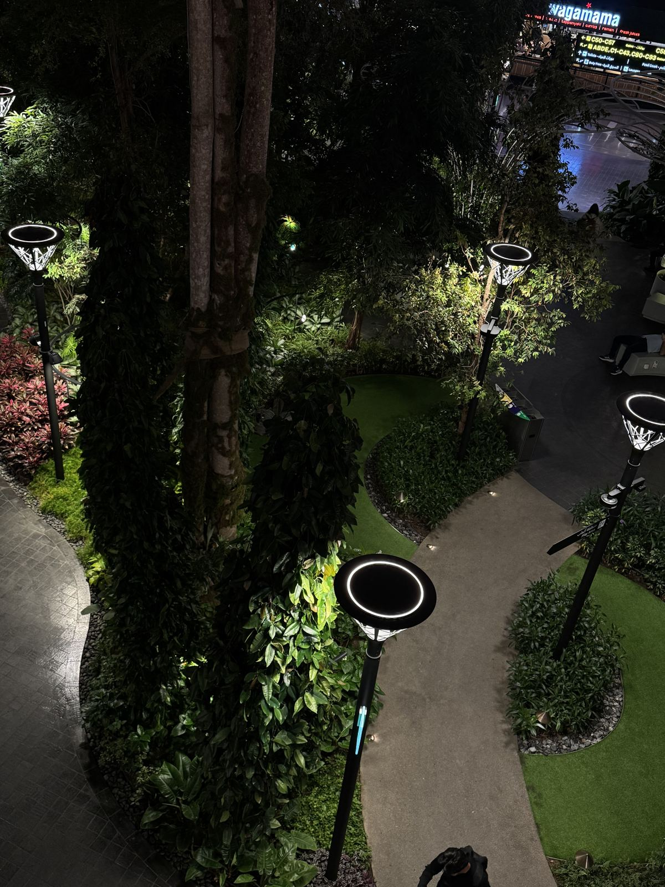
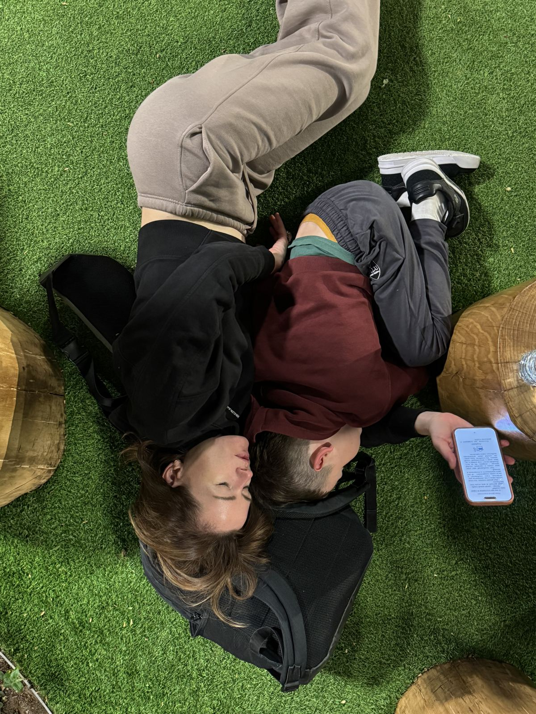

1.
Старт
Первые кадры поездки сняты на Кипре. Ещё тепло, ещё всё понятно, ещё никто не знает, сколько стоит ужин в Нью-Йорке.
Поездка началась на Кипре, в обычное утро. До Нью-Йорка было почти двое суток и одна пересадка.
Первые кадры поездки сняты на Кипре. Ещё тепло, ещё всё понятно, ещё никто не знает, сколько стоит ужин в Нью-Йорке.

В Дохе у нас было восемь часов. Первым делом мы присели в одной из бесчисленных зон ожидания и сходили освежиться. Потом встали и пошли дальше. Красная сумочка Comme des Garçons со всеми документами осталась лежать на креслах.
Пропажу мы обнаружили примерно через полчаса. Следующие полчаса бегали по аэропорту с вытаращенными глазами.
Сумочка нас дождалась. Инфаркт, слава богу, тоже согласился подождать ещё какое-то время, и мы продолжили слоняться по аэропорту. С документами это делать значительно приятнее.

▶ 0:20
▶ 0:16Для сна в аэропорту есть специальные места. Мы выбрали траву.
Трава там искусственная, а деревья настоящие. Лежишь под деревом, в аэропорту, посреди пустыни, где-то между Кипром и Америкой. Очень круто.
Совет. Восемь часов в Хамаде — это не страшно. Ищите зелёную зону с деревьями.

